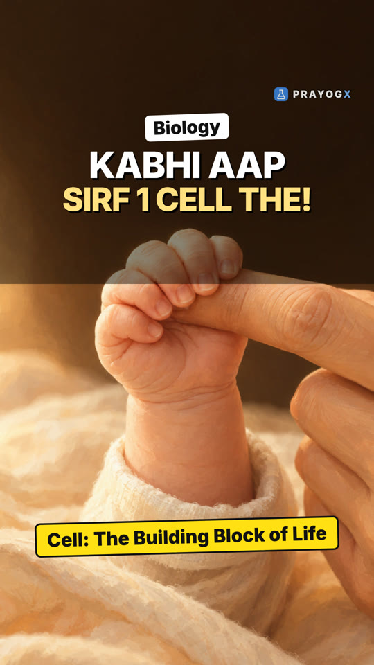
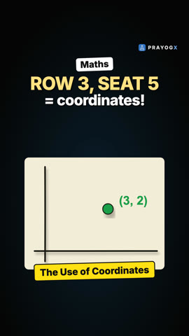
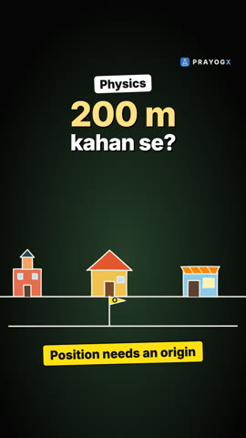
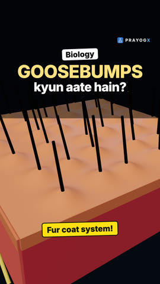

Choose your class
Every subject is laid out chapter by chapter. Each topic has a short Doodle video, notes you can download and a quick quiz.
Class 9Motion, matter, the cell and number systems: the foundations of school science and maths.ScienceMathematics21 videosClass 10Light, electricity, chemical reactions, life processes and the algebra and geometry of board year.ScienceMathematics5 videosClass 11Mechanics, thermodynamics, atomic structure, bonding, functions and the living world.PhysicsChemistryMathematicsBiology4 videosClass 12Electromagnetism, optics, modern physics, solutions and kinetics, calculus and genetics.PhysicsChemistryMathematicsBiology4 videosExtra / SupplementaryCurious questions beyond the syllabus: why the sky is blue, why we yawn, why 0.999… equals 1, and more.ScienceBiologyMathematics7 videos
Newest videos
 Golden Ratio and the Fibonacci SequenceCount a sunflower's seed spirals and you often get 34 and 55. They come from the Fibonacci sequence, whose ratios settle on the golden ratio, 1.618…Patterns in nature · Mathematics
Golden Ratio and the Fibonacci SequenceCount a sunflower's seed spirals and you often get 34 and 55. They come from the Fibonacci sequence, whose ratios settle on the golden ratio, 1.618…Patterns in nature · Mathematics
Cell: Chapter IntroductionYou began as a single cell. Every living thing is built of cells: how they were discovered, what is inside, how they divide, and the cell theory.The Fundamental Unit of Life · Biology
Coordinates: Chapter IntroductionTwo numbers pin any seat in an exam hall, and any point on a plane: coordinates turn geometry into numbers.Coordinate Geometry · MathematicsExploring Mixtures and their Separation: Chapter IntroductionMuddy water settles but milk never does: particle size decides how a mixture behaves. Solutions, colloids and suspensions, and the ways to separate them.Is Matter Around Us Pure? · Chemistry
Position Needs an Origin and a Direction"200 m" means nothing until you say from where and which way. Position is a signed number with a unit, measured from a chosen origin.Motion · Physics
Why Do We Get Goosebumps?A tiny muscle at the base of each hair, the arrector pili, contracts in cold or fear: the hair stands up and the skin around it rises into a bump.Human body · Biology